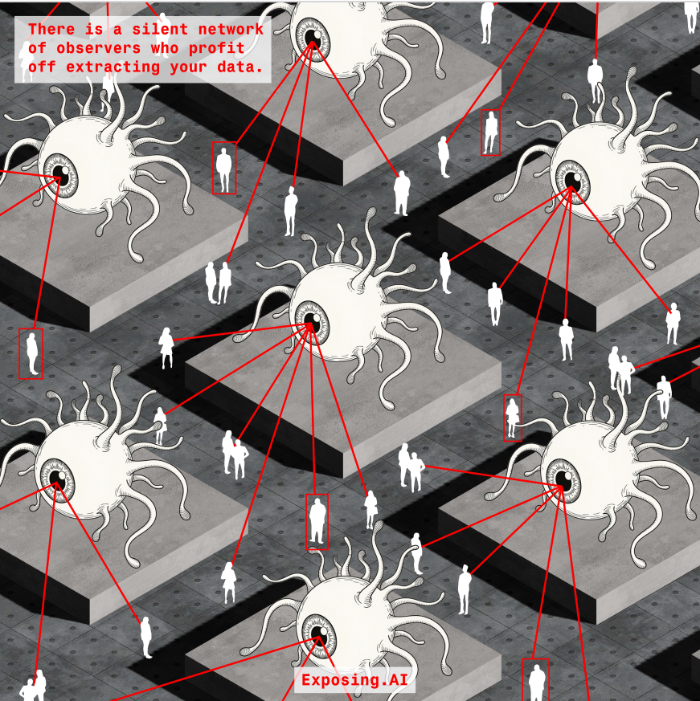
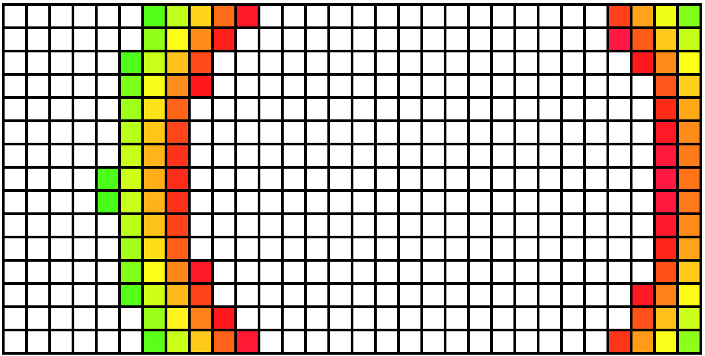
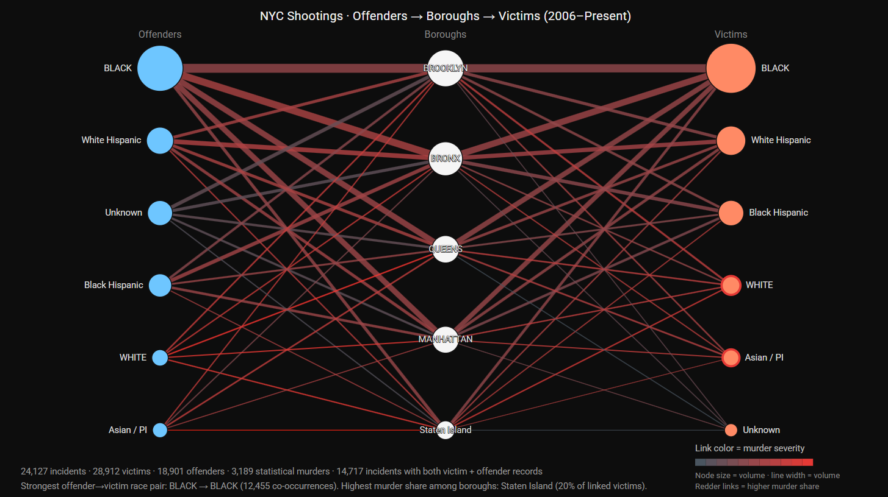
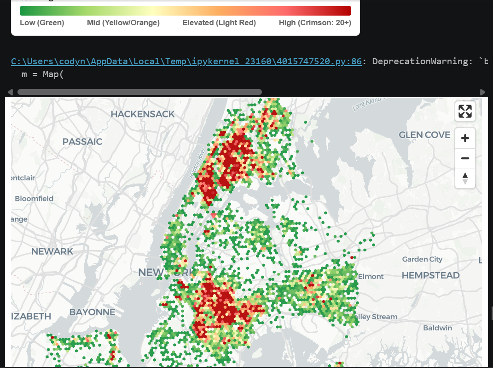

Smart
Room
Research Proposal · by Kody Naiker
Title
Smart Room
Research Question(s)
My project raises questions about government regulation, vision technology, front-end and back-end disconnect, and ultimately grapples with the question of what biometric data extraction will mean for the future of advertising, policing, etc. I do not see my project as explicitly proposing policy for vision technology, but instead raise awareness of the practices taking place now, so that people can know how.
Keywords
- Vision
- Technology
- Interaction
- Immersion
- Environment
Intersecting Fields
Yes, my project is interdisciplinary in nature spanning across many of my interests such as machine learning, privacy, surveillance, digital art and video games.
Historical Lineage
I have been pretty disturbed by the increasing use of facial recognition technologies in policing and it worries me that it is becoming commonplace. The systematic tracking of every citizen goes beyond the scope of appropriate surveillance. I hope to build upon this lineage in my project so that awareness can be created and change can be enacted.
There is an increasing number of surveillance / predictive policing companies getting bloated with government contracts to spy on the American people. Edward Snowden’s whistleblowing has also been instrumental in informing my views on policing technologies. Flock and Palantir’s coverage in the news over the past year or so is a lineage I see my project coming out of, however, I want my trajectory to be informed by techno-activism.
At the same time, I have a major interest in using digital art as a way for creating immersive / interactive experiences. This part of my project I see as coming from concert visuals and the rise of bespoke digital artists during the NFT boom. I see an opportunity for digital spaces and interactivity to bridge the gap between vision technology and the user by exposing data collection that usually happens behind the scenes.
Your Community of Practice
I am heavily influenced by Adam Harvey’s body of work, including Exposing AI, VFRAME, and CV Dazzle. Projects that all comment on what vision technology means for people as these technologies become more widespread and readily available. Lauren McCarthy’s LAUREN is another great example of machine learning commentary, but in a playful way. Forensic Architecture’s work and their ability to use digital tools to track injustices is also a major inspiration for me going into this project.
My previously mentioned precedent study, Exposing AI, serves as a guide for what questions I need to be asking and thinking of as a computational designer. I see my project as a continuation of that project’s ability to connect people to widely unknown and ethical data collection practices. The goal is to target an audience that not only includes my community of practice, but also a wider range of “every day” people who may not have previously felt they had a stake in machine learning.
Situated Technology
I see my work situated most closely with Week 2 of our readings of Zuboff and Srnicek. I see the tracking of people and extraction of data as contributing to a problem of a growing wealth gap in the world.
Methods
Web design, projections, tech culture, coding, data visualization, and graphic art are all emerging as pertinent to my practice.
I know I want to work with some of the major publicly available biometric datasets like MegaFace. I am very interested in the demographics being used to train these vision learning models.
I believe my work is likely to take the form of an exhibition, a website, and static data visualization images.
Computational Design Experiments




Visual Representation
I see aesthetic modes as a means to convey a certain attitude or feeling. Design can be playful, serious, studious, etc. The way we interpret certain aesthetics as non-threatening is also an interest of mine that will show up in my project.
As a designer, futuristic, organic, space, monumentality, and alien-like aesthetics are a huge interest to me and I find images of that genre mesmerising. However, I am not sure if that is the best choice for this project. I think it will be revealed as I work on the proposal, but I do see positioning the aesthetics of this project in line with modernity and even beyond modernity could be advantageous for getting across my point.
I believe my visual style situates me among a group of people who want to see the future shaped by design / tech and are fascinated by worlds that are removed from the aesthetics of our time.
Rhetorical Argument
My argument is that companies, primarily unnoticed, are profiting off the extraction of data and using it for morally corrupt reasons. These tech companies operate under the guise of safety or convenience or community-driven values, but they have no care for the communities they claim to serve. Vision technology, which is already being combined with existing surveillance infrastructure, will become an all-powerful technology that infringes on the rights of the individual.
Potential Capstone Outline
I want to make an interactive room enhanced with projection screens on the walls and a camera to create an environment where the room can respond to the user with visuals and audio. The general idea is that the visuals will be immersive and beautiful to the point that the user is not aware or not thinking about the potential for data collection and it is somehow revealed at the end of the interaction just what was going on behind the scenes.
The Challenge
I see the project as being two major parts: the visuals and the vision technology that is able to take input from a camera and output a visual on the screen. Instead of building tools from scratch, which I do not have the skills to do, I see myself incorporating existing open-source options like P5, D3, paper.js, and Open CV to overcome development hurdles. I also want to make sure I am able to collect enough data on vision learning to make meaningful graphics about the people who these models are trained on.